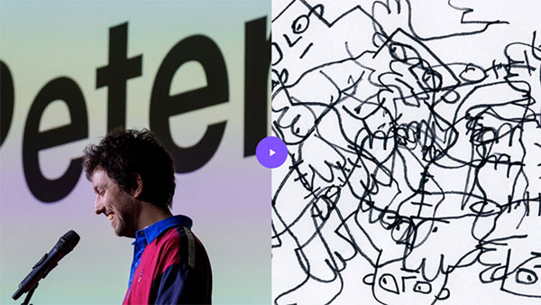

פתח דבר › ארז גביש
שלום תקש״חים,
חזרנו מהחג לשגרת החירום ולמְיוּזְלֶטֶר חדש, עם עוד מהמרצים והסטודנטים שלנו. הקישורים שלפניכם ישלחו אתכם
להרצאות על תהליכי יצירה, עבודות בנות יותר ממאה שנה, ארכיונים של תרבות פופולרית, טיפוגרפיה מקורית,
מוזיקה, משחקים, חוויות וגם פיצה. מנעד רחב של נקודות מוצא שמכל אחת מהן אפשר להמשיך למסע מחקר אישי
מרחיב אופקים ואם במסע הזה תגלו עוד אוצרות לשיתוף הכלל, שלחו לנו. שיטוט מהנה!.
הרצאה › יעל שווימר, ג׳

באופן כללי, Nicer Tuesday's" היא סדרת ההרצאות של It's nice that, שבה יוצרים מדברים על הפרויקטים העכשויים שלהם; ובאופן לא כללי, כך נזכרתי ביוצר המתוק ומעורר ההשראה Peter Millard. טוב להיזכר שזאת שליחות לבוא לעולם כדי לעשות שטויות, וגם לדעת שאם רק היה יודע שאני קיימת היינו מתחתנים מחר." לצפייה בהרצאה.